import numpy as np
from math import inf
from spotPython.fun.objectivefunctions import analytical
from spotPython.spot import spot
from scipy.optimize import shgo
from scipy.optimize import direct
from scipy.optimize import differential_evolution
import matplotlib.pyplot as plt9 Handling Noise: Optimal Computational Budget Allocation in Spot
This notebook demonstrates how noisy functions can be handled with OCBA by Spot.
9.1 Example: Spot, OCBA, and the Noisy Sphere Function
9.1.1 The Objective Function: Noisy Sphere
The spotPython package provides several classes of objective functions. We will use an analytical objective function with noise, i.e., a function that can be described by a (closed) formula: \[f(x) = x^2 + \epsilon\]
Since sigma is set to 0.1, noise is added to the function:
fun = analytical().fun_sphere
fun_control = {"sigma": 0.1,
"seed": 123}A plot illustrates the noise:
x = np.linspace(-1,1,100).reshape(-1,1)
y = fun(x, fun_control=fun_control)
plt.figure()
plt.plot(x,y, "k")
plt.show()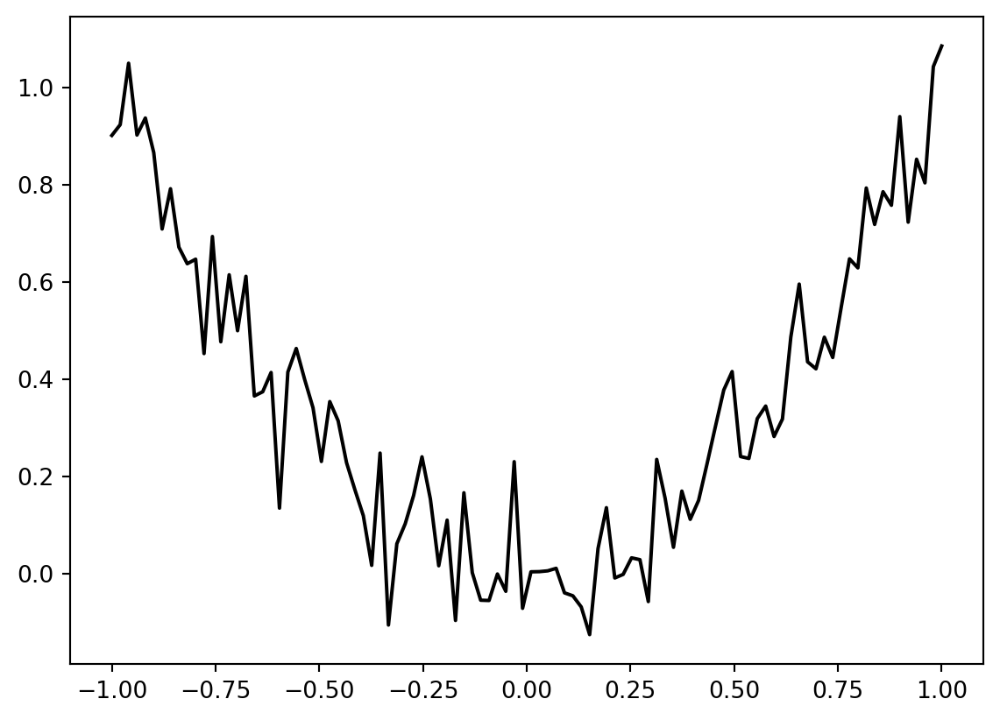
Spot is adopted as follows to cope with noisy functions:
fun_repeatsis set to a value larger than 1 (here: 2)noiseis set totrue. Therefore, a nugget (Lambda) term is added to the correlation matrixinit size(of thedesign_controldictionary) is set to a value larger than 1 (here: 2)
spot_1_noisy = spot.Spot(fun=fun,
lower = np.array([-1]),
upper = np.array([1]),
fun_evals = 50,
fun_repeats = 2,
infill_criterion="ei",
noise = True,
tolerance_x=0.0,
ocba_delta = 1,
seed=123,
show_models=True,
fun_control = fun_control,
design_control={"init_size": 3,
"repeats": 2},
surrogate_control={"noise": True})spot_1_noisy.run()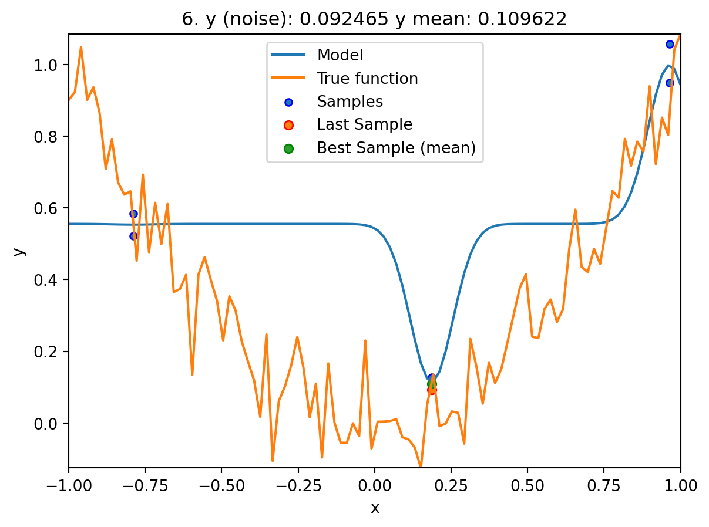
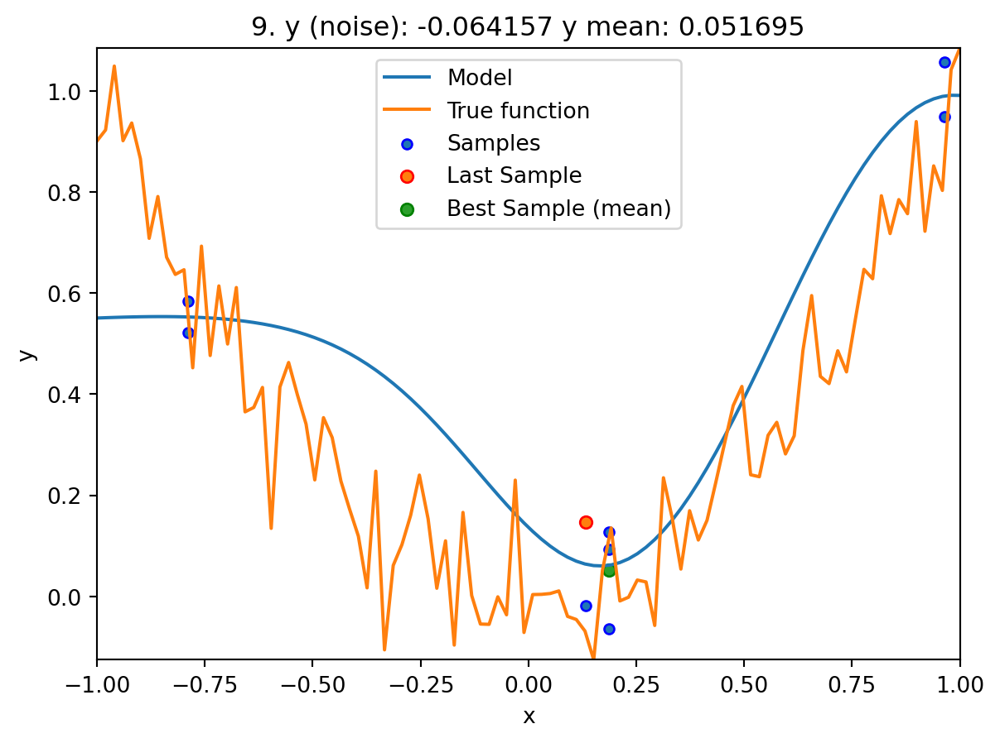
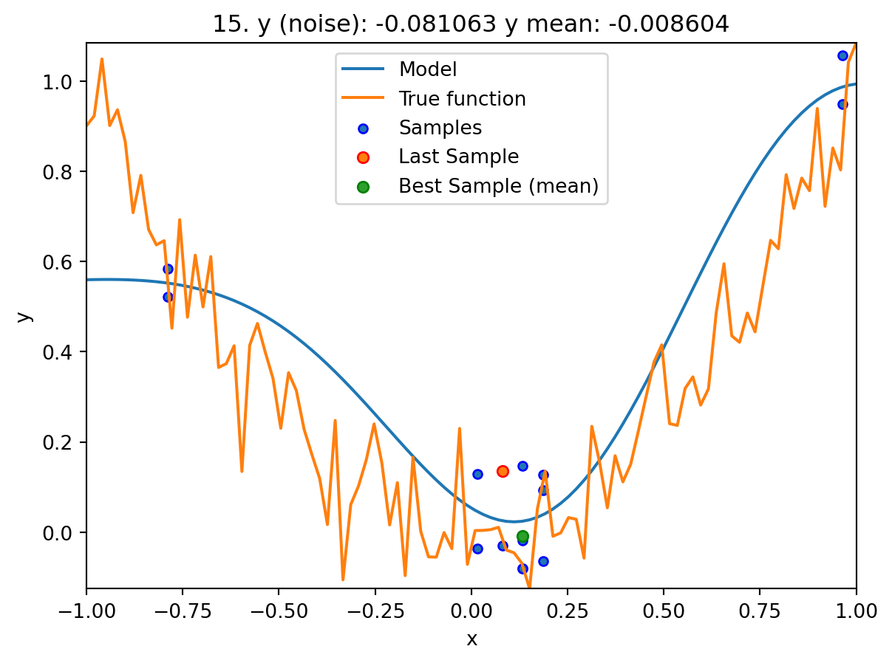
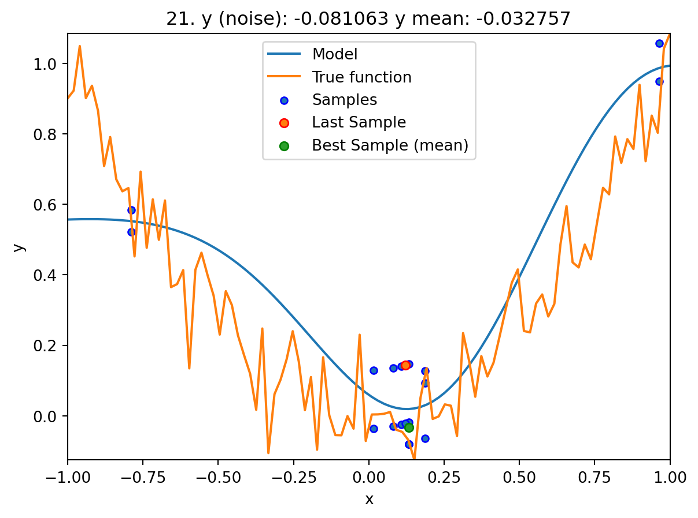
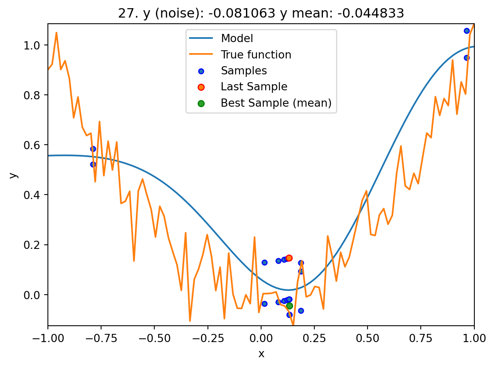
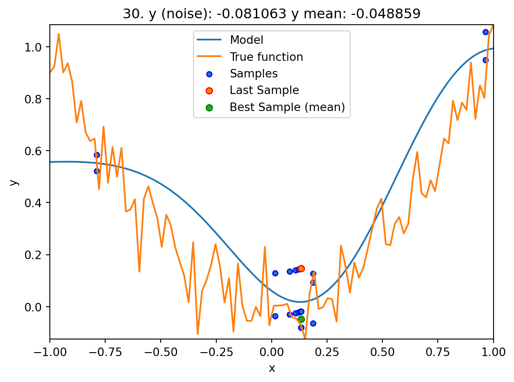
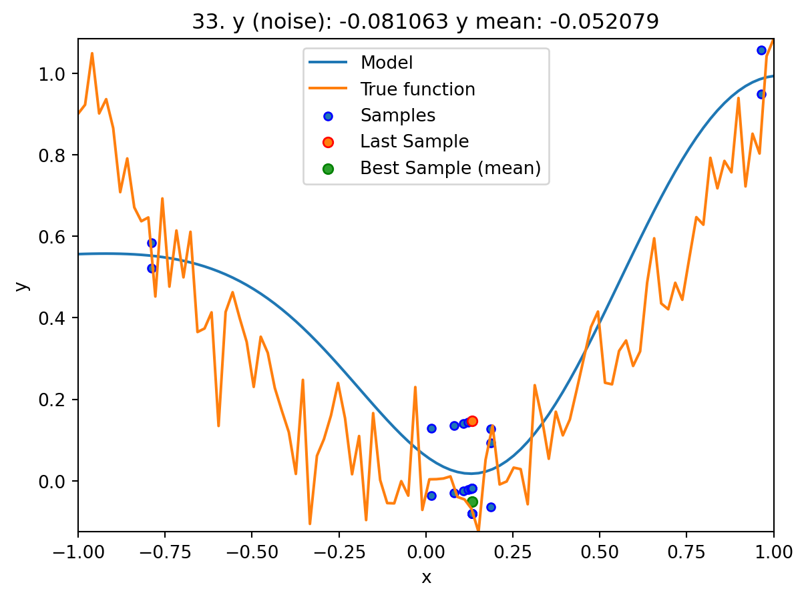
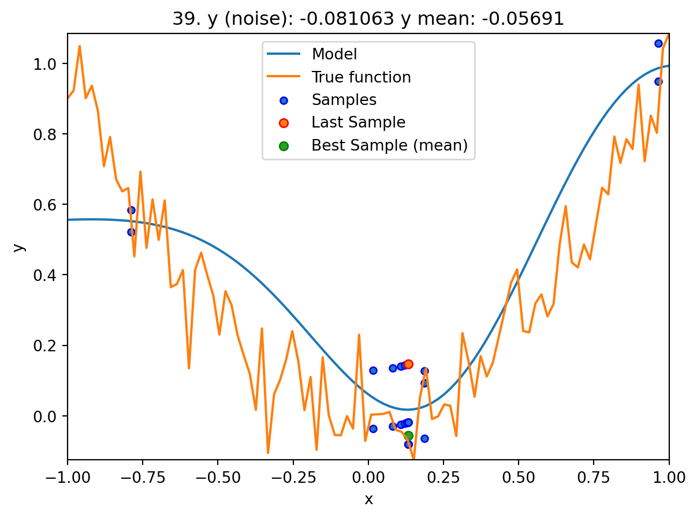

<spotPython.spot.spot.Spot at 0x148367400>9.2 Print the Results
spot_1_noisy.print_results()min y: -0.08106318979661208
x0: 0.1335999447536301
min mean y: -0.06294830660588041
x0: 0.1335999447536301[['x0', 0.1335999447536301], ['x0', 0.1335999447536301]]spot_1_noisy.plot_progress(log_y=False)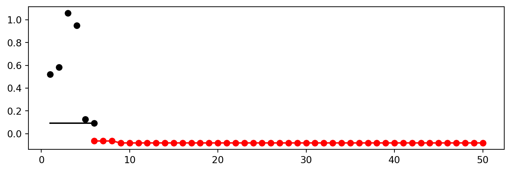
9.3 Noise and Surrogates: The Nugget Effect
9.3.1 The Noisy Sphere
9.3.1.1 The Data
We prepare some data first:
import numpy as np
import spotPython
from spotPython.fun.objectivefunctions import analytical
from spotPython.spot import spot
from spotPython.design.spacefilling import spacefilling
from spotPython.build.kriging import Kriging
import matplotlib.pyplot as plt
gen = spacefilling(1)
rng = np.random.RandomState(1)
lower = np.array([-10])
upper = np.array([10])
fun = analytical().fun_sphere
fun_control = {"sigma": 2,
"seed": 125}
X = gen.scipy_lhd(10, lower=lower, upper = upper)
y = fun(X, fun_control=fun_control)
X_train = X.reshape(-1,1)
y_train = yA surrogate without nugget is fitted to these data:
S = Kriging(name='kriging',
seed=123,
log_level=50,
n_theta=1,
noise=False)
S.fit(X_train, y_train)
X_axis = np.linspace(start=-13, stop=13, num=1000).reshape(-1, 1)
mean_prediction, std_prediction, ei = S.predict(X_axis, return_val="all")
plt.scatter(X_train, y_train, label="Observations")
plt.plot(X_axis, mean_prediction, label="mue")
plt.legend()
plt.xlabel("$x$")
plt.ylabel("$f(x)$")
_ = plt.title("Sphere: Gaussian process regression on noisy dataset")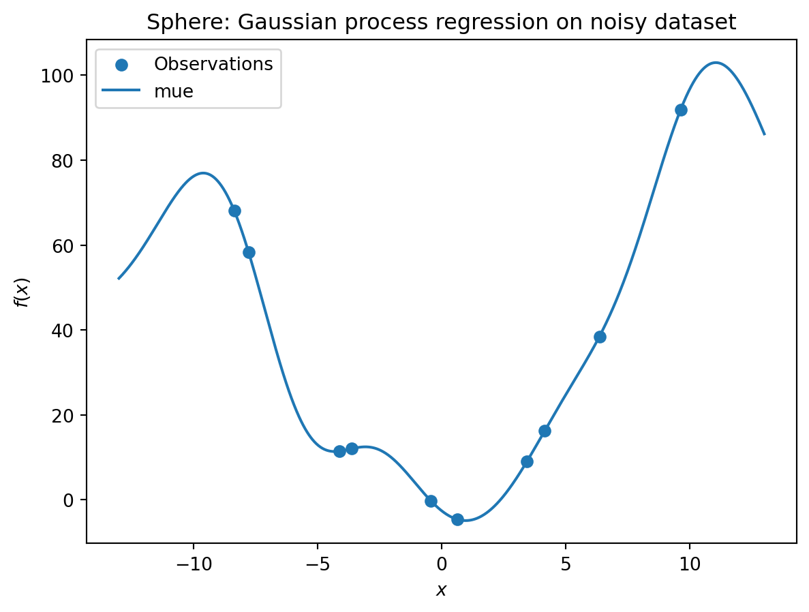
In comparison to the surrogate without nugget, we fit a surrogate with nugget to the data:
S_nug = Kriging(name='kriging',
seed=123,
log_level=50,
n_theta=1,
noise=True)
S_nug.fit(X_train, y_train)
X_axis = np.linspace(start=-13, stop=13, num=1000).reshape(-1, 1)
mean_prediction, std_prediction, ei = S_nug.predict(X_axis, return_val="all")
plt.scatter(X_train, y_train, label="Observations")
plt.plot(X_axis, mean_prediction, label="mue")
plt.legend()
plt.xlabel("$x$")
plt.ylabel("$f(x)$")
_ = plt.title("Sphere: Gaussian process regression with nugget on noisy dataset")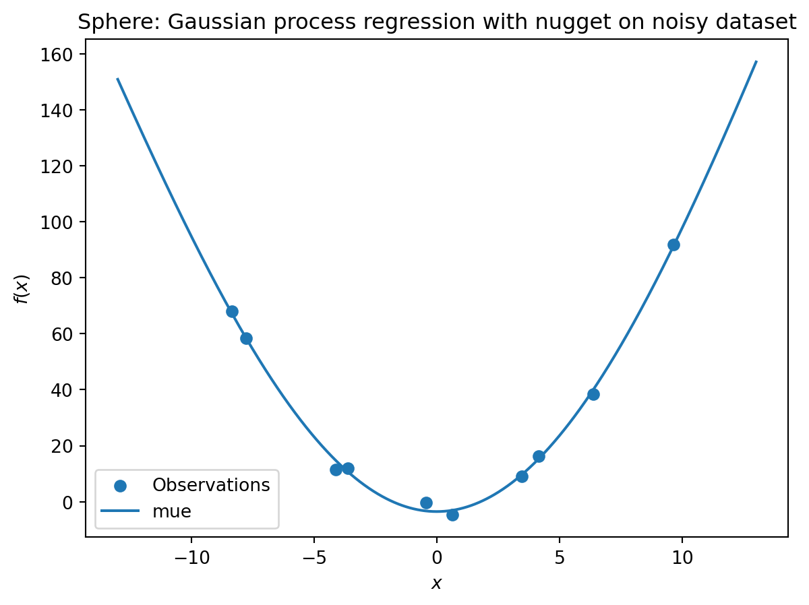
The value of the nugget term can be extracted from the model as follows:
S.LambdaS_nug.Lambda9.088150066416743e-05We see:
- the first model
Shas no nugget, - whereas the second model has a nugget value (
Lambda) larger than zero.
9.4 Exercises
9.4.1 Noisy fun_cubed
Analyse the effect of noise on the fun_cubed function with the following settings:
fun = analytical().fun_cubed
fun_control = {"sigma": 10,
"seed": 123}
lower = np.array([-10])
upper = np.array([10])9.4.2 fun_runge
Analyse the effect of noise on the fun_runge function with the following settings:
lower = np.array([-10])
upper = np.array([10])
fun = analytical().fun_runge
fun_control = {"sigma": 0.25,
"seed": 123}9.4.3 fun_forrester
Analyse the effect of noise on the fun_forrester function with the following settings:
lower = np.array([0])
upper = np.array([1])
fun = analytical().fun_forrester
fun_control = {"sigma": 5,
"seed": 123}9.4.4 fun_xsin
Analyse the effect of noise on the fun_xsin function with the following settings:
lower = np.array([-1.])
upper = np.array([1.])
fun = analytical().fun_xsin
fun_control = {"sigma": 0.5,
"seed": 123}spot_1_noisy.mean_y.shape[0]18